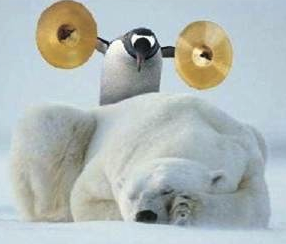

General

visit the respective TA at his desk and introduce yourself.
Instructors Matthias Felleisen
Teaching Assistants Michael Ballantyne, Dustin Jamner, Aditi Kacheria
instructor |
| D |
| Time |
| Location |
| Head TA |
Matthias Felleisen |
| TF |
| 09:50am–11:30am |
| WVG 108 |
|
Subject: CS 4500
your last name
your first name
your CCS usernames
your chosen language
an email address where you can be reached every day
the last four digits of your NU student id
My partner is Donald Duck.
If you want to earn bonus point, you and your partner jointly visit the head TA at his desk and introduce yourself in person.
Organization The course is a "studio" course, a concept that originated in art schools. In a studio course, the instructor presents basic techniques, discusses domain knowledge for specific projects, and then teaches with the help of student presentations.
Coding is all about comprehending code. Doing well with this task demands tremendous practice. Hence when your peers present code, it is critical for you to read, understand, and analyze their explanations and justifications: their problem analysis, their interface and protocol design, their component design, and their code. The presenters will learn to communicate about products to a team, to defend their design decisions, and to get help with weak spots. Conversely, the listeners will learn to analyze and to critique a product, helping the presenter uncover flaws. For details on how we will conduct the presentations, see the Project page.
Final Code Walks In lieu of a final, we will conduct an extensive code walk of your projects. If the course progresses on schedule, the final code walks will be held during the finals examination period. If the course progresses faster than anticipated, all final code walks will take place during the final week of classes.
We may also have a final voluntary game competition after the finals are over and before grades are due.
Grades The final grades are based on three factors: your project points (60%), which includes the final code walk; your active presentations (17%); your panel participation (17%); your lab book (5%), and the whim of the instructor (1%).
The instructor is known to use the entire scale of grades, from A+ to F-.